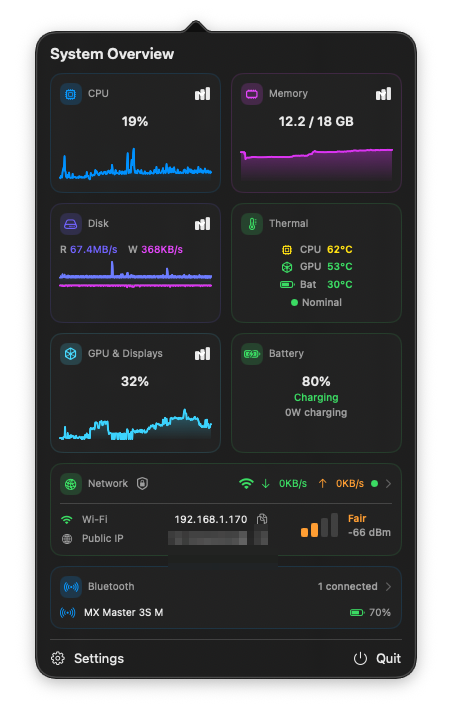

A lightweight, open-source system monitor for your Mac's menu bar — CPU, memory, network, disk, GPU, temperatures, and battery at a glance.

No telemetry, no analytics, no accounts. Nothing ever leaves your Mac — and because the source is public, you don't have to take our word for it.
A monitor that hogs the system it monitors is a bad joke. Sampling pauses when nothing is on screen, and heavy work stays off the main thread.
No paywalled features, no subscription, no nag screens. Updates are Ed25519-signed and verified before they install.
brew install --cask inequitas/tap/performance-monitor
Or download the zip and drag to Applications. The app is not notarised (no paid Apple Developer ID — it's a free app): on first launch, right-click → Open. Requires an Apple Silicon Mac (M1 or later) on macOS 14+.
Per-core CPU, process breakdowns, latency and throughput charts, per-sensor temperatures, fan speeds, SSD wear level, and battery health.
Pick which metrics live in the menu bar — as text or live sparklines — with optional threshold colouring when things run hot.
Native notifications when CPU, memory, disk or temperature cross your thresholds. Optional CSV history for your own analysis.
Performance Monitor is free and will stay that way. If it saves you the price of a paid alternative, consider sponsoring on GitHub or buying a coffee on Ko-fi — it goes toward Apple's Developer Program fee so the app can be notarised. A ⭐ on the repo helps too.